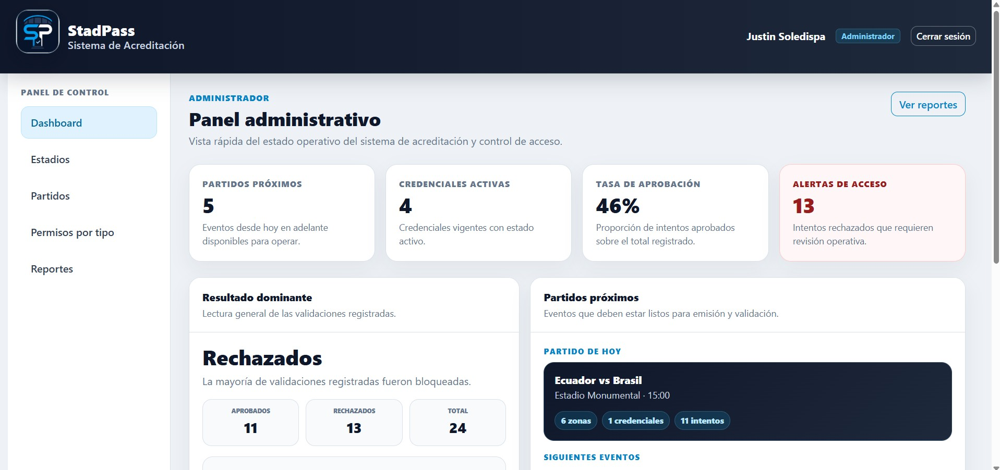
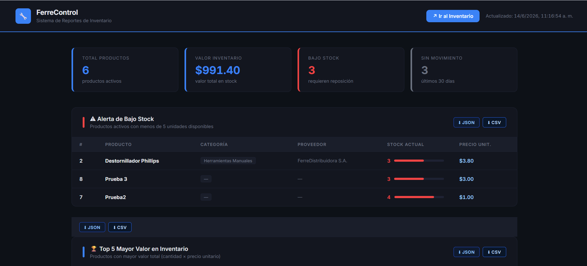

Data Warehouse, ETL, modelo dimensional y dashboards analíticos para el sistema Enreach.
Mi aporte: desarrollo de la Vista Partner, reportes analíticos, consultas SQL y conexión de datos para el dashboard.
- Modelo Kimball
- PostgreSQL
- Pentaho Spoon
- React
Ver repositorio

Sistema de acreditación y control de acceso a estadios con roles, credenciales digitales y validación por zona.
Mi aporte: módulo de operador, usuario final, emisión de credenciales, simulación de acceso y reportes.
- Laravel + PHP
- Middleware
- Bootstrap
- MySQL
Ver repositorio

Sistema distribuido de inventario para ferretería con Node.js, MySQL, Docker y comunicación privada mediante Tailscale.
Mi aporte: aplicación de inventario con Express/EJS, conexión MySQL, Docker y comunicación privada mediante Tailscale.
- Tailscale
- Node.js
- Docker
- Express
Ver repositorio